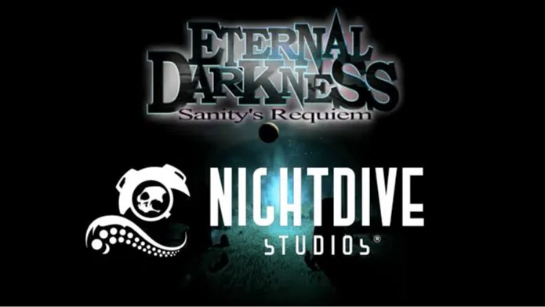
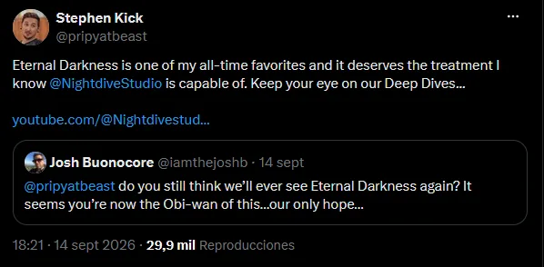

Luiso · 16 de septiembre de 2026
Los rumores sobre un posible regreso de *Eternal Darkness: Sanity's Requiem* volvieron a aparecer después de una misteriosa publicación de Stephen Kick, CEO de Nightdive Studios.
El estudio especializado en recuperar videojuegos clásicos publicó un mensaje que rápidamente fue interpretado por los jugadores como una posible referencia al juego de terror psicológico de GameCube.
Publicado originalmente en 2002 para Nintendo GameCube, Eternal Darkness fue desarrollado por Silicon Knights y publicado por Nintendo.
El juego se distinguió por su utilización de la llamada “sanity meter”, una mecánica que hacía que el estado mental del personaje afectara directamente la experiencia.
Cuando el medidor descendía, el juego podía alterar distintos elementos de la partida para hacer creer al jugador que algo estaba funcionando mal.
Pantallas aparentemente rotas, cambios en el volumen, falsos mensajes del sistema y otros trucos formaban parte de una experiencia diseñada para jugar con la percepción del usuario.
La especulación tiene sentido por el historial del estudio.
Nightdive Studios se especializó durante los últimos años en recuperar clásicos del PC y las consolas mediante remasters y nuevas versiones.
Entre sus trabajos se encuentran System Shock, Quake, Turok, The Thing: Remastered y otros proyectos destinados a preservar juegos antiguos en plataformas modernas.
Eso convirtió automáticamente cualquier referencia de la compañía a Eternal Darkness en motivo de especulación.
El problema es que los derechos de la franquicia siguen estando vinculados a Nintendo, por lo que Nightdive necesitaría algún tipo de acuerdo con la compañía japonesa para desarrollar oficialmente una nueva versión.
Actualmente tenemos una publicación que los jugadores interpretaron como una posible pista, pero no existe anuncio, fecha de lanzamiento, plataformas confirmadas ni información sobre el supuesto proyecto.

Un usuario le preguntó si alguna vez volveríamos a ver Eternal Darkness: Sanity’s Requiem y mencionó a Nightdive como “nuestra única esperanza”. Kick respondió:
“Eternal Darkness is one of my all-time favorites and it deserves the treatment I know @NightdiveStudio is capable of. Keep your eye on our Deep Dives…”
Es decir: “Eternal Darkness es uno de mis juegos favoritos de todos los tiempos y merece el tratamiento que sé que Nightdive Studios es capaz de darle. Estén atentos a nuestros Deep Dives…”